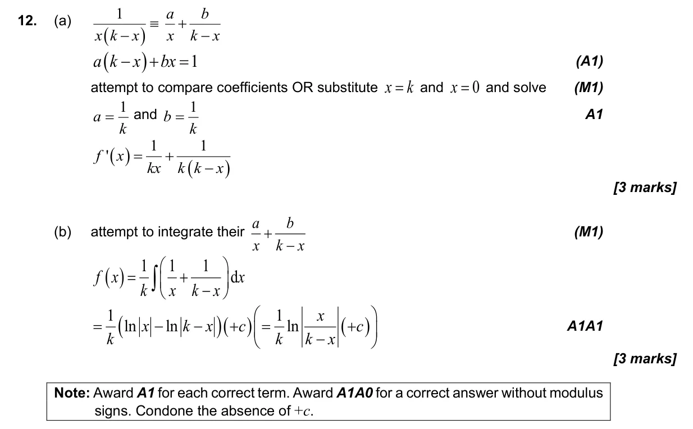
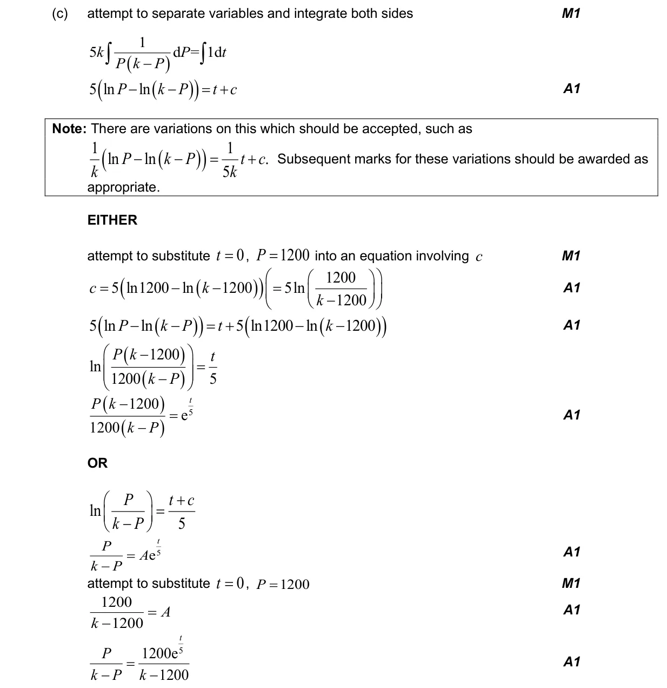
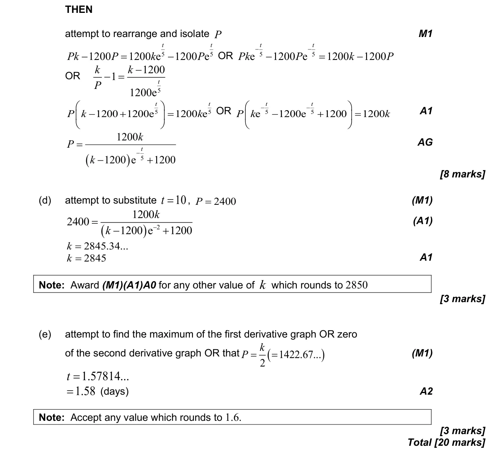

20 marks P2 TZ1 Section B Calculator 5.18 First-order differential equations1.11 Partial fractions5.15 Further standard derivatives and integrals2.10 Solving equations graphically and analytically5.8 Optimization, local extrema and points of inflexion Question Hide breakdown abcde Markscheme 